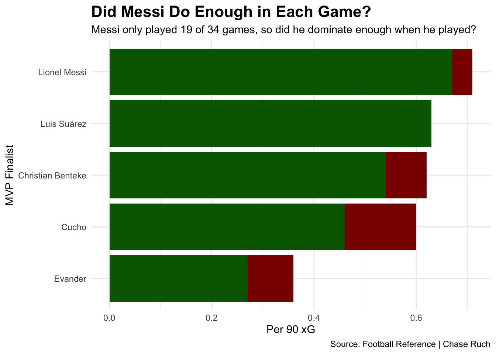

Was Nineteen Games Enoguh to Deem Messi 2024 MLS MVP?
soccer
mls
messi
Author
Chase Ruch
Published
April 14, 2025
It would be difficult to offer a dissenting opinion to Messi being the greatest soccer player in the 21st century, and potentially of all time. The Argentine winger took on a new and historical challenge by moving to Miami in the Summer of 2023 to play in Major League Soccer.
His first appearance in July of 2023 provided a marquee MLS moment where he scored a game-winning free kick in the final moments of a Leagues Cup bout versus Cruz Azul. From that moment on, expectations were high for his first full season in 2024.
To put the basic stats forward, Messi had a historically good season. He had 20 goals and 16 assists.
The resounding issue for the critics of his MVP award was that he only played 19 games in the season due to a mid-season ankle injury at Copa America. For those that are new to the league, the regular season is 34 games.
The question becomes clear: Did Messi prove enough in 19 games to be the true MLS MVP?
The first sample size will be the 2024 MLS Designated Players. These players’ salaries can exceed the salary cap of MLS which usually consists of the MLS MVP seasonally.
How balanced and efficient was Messi in creating assists and goals when he had the chances to do so?
To look at this, a stat ratio for assist and goal efficiency would be most effective. Goal efficiency is goals to expected goals (xG) and assist efficiency is assists to progressive passes.
If one looks at Messi within the “in-form attack” segement, it is clear that he is the most balanced in-form player that favors goal scoring (LA Galaxy’s Riqui Puig is the closest to rival him). The most interesting part is his teammate (at both Inter Miami and Barcelona) Sergio Busquets was significantly more efficient in front of goal than Messi last season. The caveat is that the midfielder did not dish out assists as efficiently as he typically did in the past.
The next rebuttal to come from the critics is the penalty argument. A social media phenomenon is the phrase “Pessi.” This is essentially a slang term showing that Messi is helped by his teammates and referees to get goal scoring opportunities at the penalty spot.
Just recently in April viewers saw a “Pessi” flag at BMO Stadium in Los Angeles before a match against LAFC, mocking the World Cup winner. This is an ongoing fight against his legitimacy that is particularly fueled in the Messi versus Cristiano Ronaldo debate.
So, did Mr. Messi prove the doubters wrong? Did he rely on penalties to get the MVP award to his name? Time to narrow this down to the MVP finalists.
So, Messi is the second least reliant MVP candidate on penalties when it comes to getting xG opportunities during the entire season. What is not helping his case is that he has the second least xG for the entire season because his opponents played more competitions.
To level the playing field for the Argentine, we will go to xG per 90. This is where Messi’s MVP case begins to flourish.
Code
ggplot() +geom_bar(data=xgmvp90, aes(x=reorder(player, xg90), weight=xg90), fill="darkred") +geom_bar(data=xgmvp90, aes(x=reorder(player, xg_np90), weight=xg_np90), fill="darkgreen") +coord_flip() +labs(x="MVP Finalist", y="Per 90 xG", title="Did Messi Do Enough in Each Game?", subtitle="Messi only played 19 of 34 games, so did he dominate enough when he played?", caption="Source: Football Reference | Chase Ruch",plot.title.position="plot" ) +theme_minimal() +theme(plot.title =element_text(face ="bold"))

There are three MLS MVP winners in the last decade to set the record for most points in a single season with their respective team. One of these players set this record along with the single season scoring record: Carlos Vela.
In 2019, Vela scored 34 goals in 33 appearances for LAFC. It would be unusual if he did not score in any given fixture.
If one were to raise the question of the greatest single season in MLS history, the measuring stick is Vela.
Before any rash assumptions are made, Messi did not have a better season than Vela because Messi is 13 goal contributions short (Vela also holds that record in a single season with 49). The question is did Messi have the pace that Vela did to potentially reach his mark if they matched in appearances.
The best statistic to measure this is a “goal creating action,” or GCA. A GCA credits a player for a shot, a dribble, a foul drawn, a clearance, or a tackle that leads to a goal. There are other specific circumstances that can credit a player with a GCA, but those are the most common scenarios.
Code
vela <-read_csv("vela_match_logs_2019.csv") |>filter(Comp =="MLS") |>filter(Round =="Regular Season")messi <-read_csv("messi_2024_match_logs.csv") |>filter(Comp =="MLS") |>filter(Round =="Regular Season")messisum <- messi |>mutate(cumgca =cumsum(GCA))messiclean <- messisum |>separate(Date, into=c("Year", "Date"), sep="2024-") |>separate(Date, into=c("Month", "Day"), sep="-")velasum <- vela |>mutate(cumgca =cumsum(GCA))velaclean <- velasum |>separate(Date, into=c("Year", "Date"), sep="2019-") |>separate(Date, into=c("Month", "Day"), sep="-")ggplot() +geom_step(data=messiclean, aes(x=Month, y=cumgca, group=Squad), color="#F7B5CD", size=2) +geom_step(data=velaclean, aes(x=Month, y=cumgca, group=Squad), color="#C39E6D", size=2) +labs(x="Month",y="Cumulative Goal-Creating Actions", title="Messi Versus the Most Impressive MVP Season", subtitle="Did Messi have any pace to Carlos Vela's 2019 Season to match goal-creating actions?", caption="Source: Football Reference | By Chase Ruch",plot.title.position="plot" ) +theme_minimal() +annotate("text", x=01, y=5, label="Messi", color="#F7B5CD", fontface="bold") +annotate("text", x=02, y=7, label="Vela", color="#C39E6D", fontface="bold") +annotate("text", x=6.5, y=10, label="Messi's Injury", color="red", fontface="bold") +theme(plot.title =element_text(face ="bold")) +geom_vline(xintercept =5.1) +geom_vline(xintercept =7.9)
The crucial area to look at is Messi’s injury phase during the late summer to early fall. He had a better GCA pace than Vela.
It is not possible to be 100% sure that Messi would have a better season than the Mexican, but it is valid to theorize that he had the pace to.
Another interesting piece to dwell on is the lull Vela had to end the season in terms of GCA. The season ended a bit earlier at the time, but a fully healthy Messi had a window to pounce on it.
Messi also picked up where he left off as soon as he came back. He made it to within five GCAs.
So not only did Messi have MVP dominance among his candidate pool, he had pace to beating the best single MVP season in league history in some statistical areas. If one were a bettor that likes plus odds, the boy from Rosario, Argentina, is a solid take to one-up Vela’s record.